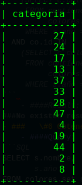
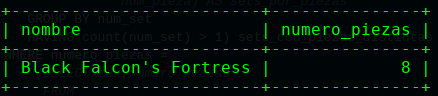
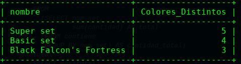

CREATE SCHEMA colores
DEFAULT CHARACTER SET utf8
COLLATE utf8_spanish2_ci;
CREATE TABLE colores.categoria(
id INTEGER UNIQUE NOT NULL,
nombre VARCHAR(250) NOT NULL,
PRIMARY KEY(id)
);
CREATE TABLE colores.pieza(
num_pieza INTEGER UNIQUE NOT NULL,
nombre VARCHAR(250) NOT NULL,
categoria INTEGER NOT NULL,
PRIMARY KEY (num_pieza),
FOREIGN KEY (categoria) REFERENCES colores.categoria(id)
);
CREATE TABLE colores.color(
id INTEGER UNIQUE NOT NULL,
nombre VARCHAR(250) NOT NULL,
rgb VARCHAR(6) NOT NULL,
es_transparente VARCHAR(1) NOT NULL,
PRIMARY KEY(id)
);
CREATE TABLE colores.tematica(
id INTEGER UNIQUE NOT NULL,
nombre VARCHAR(250) NOT NULL,
PRIMARY KEY (id)
);
CREATE TABLE colores.set(
num_set INTEGER UNIQUE NOT NULL,N
nombre VARCHAR(250) NOT NULL,
año INTEGER NOT NULL,
tematica INTEGER,
PRIMARY KEY (num_set),
FOREIGN KEY (tematica) REFERENCES colores.tematica(id)
);
CREATE TABLE colores.contiene(
num_pieza INTEGER NOT NULL,
num_set INTEGER NOT NULL,
color INTEGER NOT NULL,
cantidad INTEGER NOT NULL,
PRIMARY KEY (num_pieza, num_set, color),
FOREIGN KEY (num_pieza) REFERENCES colores.pieza(num_pieza),
FOREIGN KEY (num_set) REFERENCES colores.set(num_set),
FOREIGN KEY (color) REFERENCES colores.color(id)
);
SELECT DISTINCT p.categoria
FROM pieza p,
contiene c,
colores.set s
WHERE p.num_pieza IN
(SELECT c.num_pieza
FROM contiene c,
colores.set s
WHERE c.num_set = s.num_set
AND s.año > '2000'
AND s.año < '2004')
AND c.color NOT IN
(SELECT co.id
FROM color co,
contiene c
WHERE co.nombre = 'Red');

SELECT co.nombre
FROM color co
WHERE co.id IN
(SELECT c.color
FROM contiene c,
pieza p
WHERE c.num_pieza = p.num_pieza
AND c.num_set IN
(SELECT s.num_set
FROM colores.set s
WHERE s.tematica IN
(SELECT t.id
FROM tematica t,
colores.set s
WHERE t.nombre = 'The Hobbit'
OR t.nombre = 'Jurassic World')
AND
(SELECT count(*)
FROM contiene c
WHERE c.num_set = s.num_set) > 4));
SELECT nombre,
numero_piezas
FROM `set`
INNER JOIN
(SELECT num_set,
count(num_set) AS numero_piezas
FROM
(SELECT num_set,
num_pieza
FROM contiene
GROUP BY num_set,
num_pieza) AS sets_por_piezas
GROUP BY num_set
HAVING count(num_set) > 1) sets_con_piezas_distintas ON sets_con_piezas_distintas.num_set=set.num_set
WHERE numero_piezas =
(SELECT max(numero_piezas)
FROM
(SELECT num_set,
count(num_set) AS numero_piezas
FROM
(SELECT num_set,
num_pieza
FROM contiene
GROUP BY num_set,
num_pieza) AS sets_por_piezas
GROUP BY num_set
HAVING count(num_set) > 1) AS test);

SELECT p.num_pieza,
p.nombre
FROM pieza p
WHERE p.num_pieza IN
(SELECT c.num_pieza
FROM contiene c
WHERE c.num_set = ALL
(SELECT s.num_set
FROM colores.set s
WHERE s.num_set IN
(SELECT c.num_set
FROM contiene c
WHERE c.color IN
(SELECT co.id
FROM color co
WHERE co.es_transparente = 't'
AND co.nombre LIKE '%Green%'))));
SELECT DISTINCT nombre,
count(contiene.num_pieza) as cantidadDeColores
FROM contiene
INNER JOIN pieza ON contiene.num_pieza=pieza.num_pieza
INNER JOIN
(SELECT num_pieza,
count(num_pieza)
FROM contiene
GROUP BY num_pieza
HAVING count(num_pieza) > 1) AS repes ON repes.num_pieza=contiene.num_pieza
GROUP BY contiene.num_pieza
HAVING count(contiene.num_pieza) >1;
SELECT categoria.nombre
FROM pieza
INNER JOIN
(SELECT num_pieza
FROM contiene
INNER JOIN
(SELECT num_set
FROM `set`
WHERE año=
(SELECT max(año)
FROM `set`)) AS last_year_sets ON last_year_sets.num_set=contiene.num_set) AS last_year_piezas ON last_year_piezas.num_pieza=pieza.num_pieza
INNER JOIN categoria ON categoria.id= pieza.categoria;
SELECT set.nombre,
count(contiene.num_set) AS Colores_Distintos
FROM contiene
INNER JOIN
(SELECT contiene.num_set,
contiene.num_pieza,
count(*) AS colores_distintos
FROM contiene
INNER JOIN
(SELECT num_set,
count(num_set) AS count_num_set
FROM contiene
GROUP BY num_set
HAVING count(num_set) > 1) AS set_mas_1_pieza ON set_mas_1_pieza.num_set=contiene.num_set
INNER JOIN color ON color.id=contiene.color
INNER JOIN
(SELECT num_pieza,
count(num_pieza) AS count_num_pieza
FROM contiene
GROUP BY num_pieza
HAVING count(num_pieza) > 1) AS piezas_repes ON contiene.num_pieza = piezas_repes.num_pieza
GROUP BY contiene.num_set,
contiene.num_pieza
HAVING count(*) > 1) AS RESULT ON result.num_set = contiene.num_set
AND result.num_pieza = contiene.num_pieza
INNER JOIN `set` ON set.num_set = contiene.num_set
GROUP BY contiene.num_set;
SELECT color.rgb,
categoria.nombre,
tematica.nombre
FROM contiene
INNER JOIN
(SELECT num_set,
total
FROM
(SELECT num_set,
sum(cantidad) AS total
FROM contiene
GROUP BY num_set) AS cantidad_total
WHERE total =
(SELECT min(total)
FROM
(SELECT num_set,
sum(cantidad) AS total
FROM contiene
GROUP BY num_set) AS cantidad_total)
OR total =
(SELECT max(total)
FROM
(SELECT num_set,
sum(cantidad) AS total
FROM contiene
GROUP BY num_set) AS cantidad_total)) AS max_min_set ON max_min_set.num_set=contiene.num_set
INNER JOIN color ON color.id=contiene.color
INNER JOIN `set` ON set.num_set=contiene.num_set
INNER JOIN pieza ON pieza.num_pieza=contiene.num_pieza
INNER JOIN categoria ON categoria.id=pieza.categoria
INNER JOIN tematica ON tematica.id=set.tematica;

DELIMITER $
CREATE PROCEDURE SetsPorTematicaAnio(IN tematica INTEGER, IN año INTEGER)
BEGIN
select set.nombre,sum(cantidad) as totalPiezas
from contiene inner join `set` on contiene.num_set=set.num_set
where set.año=año and set.tematica=tematica group by contiene.num_set;
END $
DELIMITER ;
DELIMITER $
CREATE PROCEDURE NumPiezasEnSet(IN nombre_set VARCHAR(250))
BEGIN
select nombre, sum(cantidad) as total_piezas, count(color) as total_colores
from contiene inner join `set` on contiene.num_set = set.num_set
where set.nombre = nombre_set group by set.num_set;
END $
DELIMITER ;
DELIMITER $
create function getBoolean(dato VARCHAR(1)) returns boolean
BEGIN
return(IF(STRCMP(dato, "t") = 0, true, false));
END $
DELIMITER ;
DELIMITER $
CREATE TRIGGER insert_check BEFORE UPDATE ON contiene
FOR EACH ROW
BEGIN
DECLARE nom_set varchar(250);
SET nom_set = (SELECT nombre
FROM colores.set
WHERE num_set = NEW.num_set);
IF PiezasEnSet(nom_set) >= 4 THEN
SIGNAL SQLSTATE '02000'
SET MESSAGE_TEXT = 'Error: El set tiene al menos 4 piezas';
END IF;
END $
DELIMITER ;